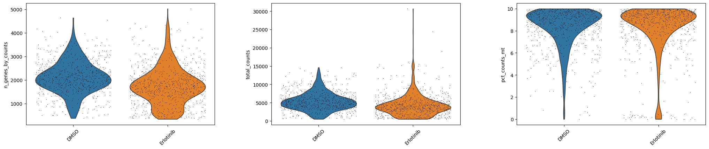

Single-Cell QC Report
Date: 2025-06-12 18:22:20
Initial shape: 24563 cells × 63678 genes
Post-filtering shape: 1637 cells × 22896 genes
QC thresholds: min_genes = 200, min_cells_per_gene = 3, max_pct_mito = 10%
QC Metrics Before Filtering
Violin plots grouped by metadata
Scatter plots colored by metadata
QC Metrics After Filtering
Violin plots grouped by metadata

Scatter plots colored by metadata